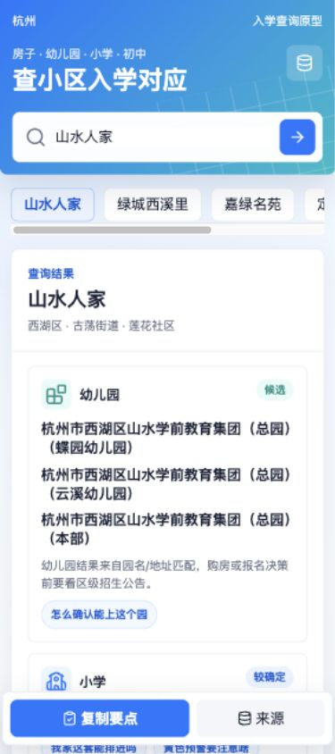
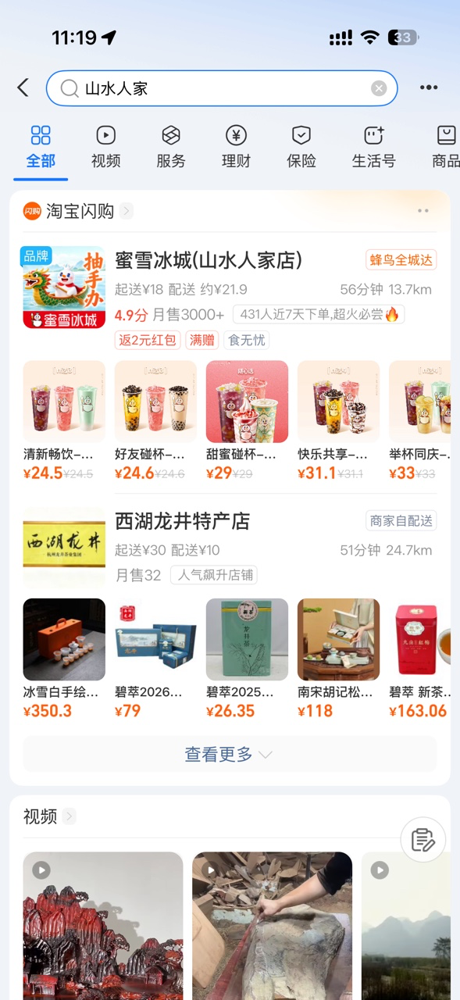
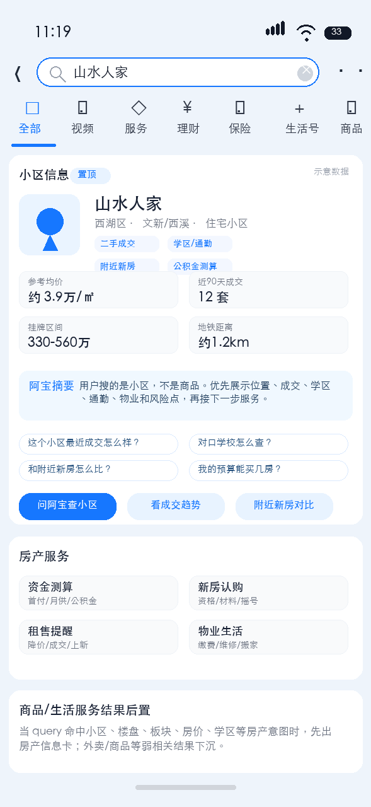
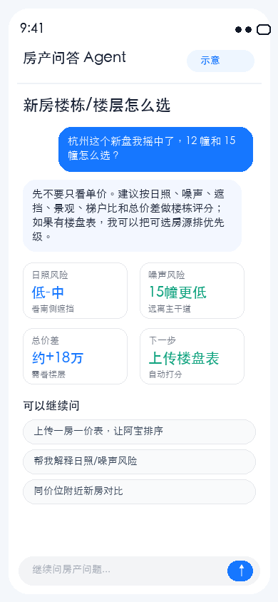
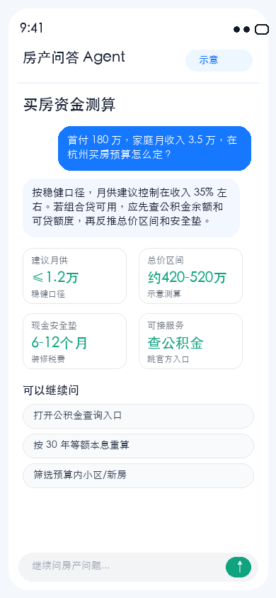
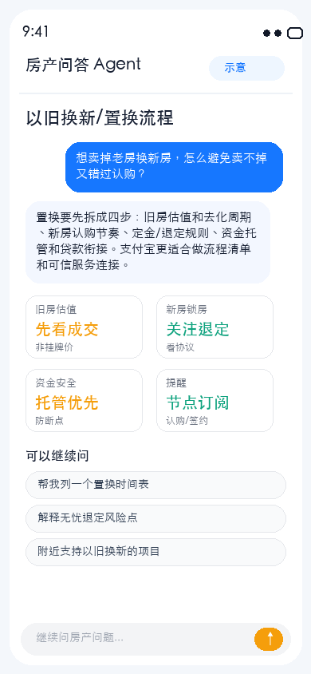
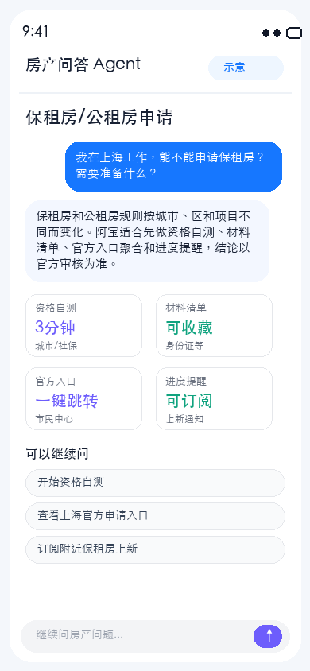

房产服务接入阿宝：切口起步，逐步建设阵地
核心判断：房产需求足够大，但支付宝当前房源、楼盘、房价、小区内容基础薄弱，不适合一上来做“大而全找房平台”。更现实的打法，是趁 AI 版把供给服务 MCP / CLI 化的窗口，先用支付宝已有的政务、信用、支付、电子签、公积金能力，围绕保租房、公租房、租房签约、买房资金测算、房价问答等切口做服务基建。
一句话结论
建议立项做“支付宝房产服务 Agent”试点，但定位不是立刻做贝壳/安居客，而是先做支付宝能办成事、能承接搜索高意图的房产服务入口。
- 市场成立：买房、租房、住房服务是大民生需求，低频但高决策、高焦虑、高客单。
- 短板明确：支付宝缺自有房源、楼盘库、房价库、经纪人和内容社区，直接做信息平台风险高。
- 优势清晰：实名、信用、支付/托管、电子签、公积金、政务入口，是房产交易与租住服务的后半程优势。
- 打法建议：P0 先跑保租/公租申请助手、租房合同/免押/付租、买房资金测算，同时把“小区/楼盘搜索结果卡”作为流量试点；P1 再接房价问答、法拍房、新房数据。
试点定位
- 不是做内容平台：不以资讯、攻略、社区为主，避免和贝壳/安居客正面拼前半程供给。
- 不是做投资顾问：房价和小区趋势只做历史信息解释，不预测涨跌，不给买卖建议。
- 优先做办事闭环：从保租/公租、资金测算、合同签约、付租提醒等支付宝能承接的服务开始。
- 先验证再扩张：6 周内看真实 query、搜索结果卡点击、服务卡点击、试算/申请/签约完成、成本和风险投诉。
1. 产品形态参考：阿宝入口 + 两个 Agent 原型
AI 版会把服务前置到对话入口。房产方向可以延续阿宝的轻交互形态：用户先问一句，再由 Agent 返回结果、依据和下一步服务卡。

2. 市场判断：不是高增长故事，是大需求和强痛点故事
房产市场不宜包装成“高速增长赛道”。更稳妥的表达是：交易规模仍大，租住人群持续存在，用户决策链长且信息不对称，AI 入口有机会承接大量“问、算、办”的高意图需求。
数据来源：国家统计局《2025年全国房地产市场基本情况》；国新办/住建部保障性租赁住房公开信息；新华社转引《2025中国城市长租市场发展蓝皮书》。
3. 现状诊断：我们缺的是前半程供给，强在后半程服务
支付宝当前不具备直接做“全量找房平台”的基础，但具备做“可信办事与交易服务入口”的基础。
| 能力 | 当前判断 | 直接风险 | 补齐路径 |
|---|---|---|---|
| 新房楼盘/二手小区/房价数据 | 薄弱或没有 | 无法回答“哪里买、值不值、多少钱”这类核心问题 | 先外接数据方做问答试点，再沉淀城市、板块、小区、口径和质量评估 |
| 租房房源供给 | 可谈但未验证 | 房源去重、实时性、真实性、服务商责任边界不清 | 先拿保租房、公寓、机构房源做小规模城市试点，验证可用量和转化 |
| 政务/公积金/市民中心 | 有入口优势 | 城市差异大，不能由模型直接代办 | 做政策问答、材料清单、资格自测、官方服务跳转和进度提醒 |
| 支付、信用、电子签、资金托管 | 强差异化 | 涉及交易和合规，需服务商准入与售后 | 用于租房免押、合同签署、租金支付、交易保证金等后半程服务 |
| 内容社区/经纪人体系 | 基本没有 | 无法靠内容和顾问长期留住用户 | 初期不碰重社区，先用任务型服务沉淀用户意图和对象资产 |
4. 起步策略：用支付宝优势选切口，不从最重的房源平台开始
| 优先级 | 切口 | 为什么适合支付宝 | 最小可上线形态 | 验证指标 |
|---|---|---|---|---|
| P0 | 保租房/公租房申请助手 | 用户需求明确，政务属性强，和市民中心、实名、免填有协同 | 政策问答、资格自测、材料清单、城市入口聚合、申请提醒 | 资格自测完成率、官方入口点击率、材料清单收藏/提醒 |
| P0 | 租房合同、免押、付租 | 支付宝在信用、电子签、支付、提醒上有明显后半程优势 | 合同模板生成、电子签入口、免押规则说明、租金提醒和支付 | 合同发起率、签约完成率、付租绑定率、投诉率 |
| P0 | 买房资金测算 | 房贷计算器、公积金查询、金融服务和用户授权天然在支付宝内 | 公积金查询跳转、首付/月供/组合贷试算、预算安全垫提示 | 试算完成率、公积金入口点击、预算筛选后服务点击 |
| P0 | 支付宝搜索小区/楼盘信息卡 | 用户直接搜“小区、楼盘、板块、房价、学区”时意图很强，当前搜索容易把商品/生活服务排前，房产结果卡可以低成本接住流量 | 小区/楼盘对象识别、信息摘要、成交/学区/通勤/附近新房服务卡、问阿宝入口；数据未接入时明确标“示意/口径” | 房产 query 命中量、信息卡曝光点击率、追问率、服务卡点击、误触/投诉率 |
| P1 | 房价/小区趋势问答 | AI 适配度高，但数据口径和合规边界要非常严 | 外接数据方 MCP，回答趋势、口径、图表和风险提示，不做涨跌预测 | 问答完成率、追问率、服务卡点击、风险拦截率、调用成本 |
| P1 | 法拍房信息服务 | 司法拍卖、保证金、资金安全、风险核验和支付宝能力有连接点 | 法拍信息聚合、风险清单、保证金/资金流程说明、提醒订阅 | 订阅率、保证金链路点击、风险说明阅读完成率 |
| P2 | 新房/租房全量找房 | 需求最大，但也是最重，需要供给、服务商、履约和风控体系 | 先做重点城市、重点供给类型，不承诺全国覆盖 | 有效房源数、去重率、更新时效、看房预约和履约指标 |
5. 阿宝形态：把房产能力做成可调用服务，不只是问答内容
AI 版的机会不在“多一个聊天入口”，而在用户问完后能继续完成下一步服务。MCP / CLI 化时，每个能力都要有明确输入、输出、授权、降级和合规边界。
政策与资格
回答公租房、保租房、限购、社保、人才资格等问题，输出材料清单和官方入口。
housing_policy.lookup资金测算
基于用户输入和授权跳转，完成公积金查询、组合贷、首付、月供和现金压力试算。
mortgage_budget.calculate租住交易
承接合同生成、电子签、免押规则、付租提醒、备案入口和入住后缴费服务。
rental_contract.start趋势问答
外接房价/小区数据方，仅输出历史趋势、口径、来源和风险提示，不给投资承诺。
price_trend.answer小区对象卡
识别搜索 query 中的小区、楼盘、板块，返回位置、成交、学区、通勤、物业和下一步服务。
community_card.render新房楼盘评测
学习小鸡选房式能力，把楼栋、户型、日照、噪声、遮挡和一房一价做成可解释评分。
new_house.evaluate法拍风险
聚合法拍信息，提示腾退、税费、限购、保证金、过户等风险点和办理路径。
auction_house.screen服务编排
由阿宝判断用户意图，返回回答 + 服务卡 + 官方/持牌渠道跳转，不代替用户确认。
housing_agent.route6. 新房补充：从“小区/楼盘对象”切入，而不是从全量找房切入
结合新房产品 review，最值得学习的不是“房源越多越好”，而是小鸡选房这类工具抓住了用户在新房决策里的真实难点：同一个楼盘里到底选哪栋、哪层、哪户，日照、噪声、遮挡、学区、通勤和总价差怎么取舍。支付宝不一定先做重平台，可以先把小区/楼盘识别成可服务的“对象资产”。
搜索即入口
用户在支付宝直接搜“小区名、楼盘名、板块名”时，先给小区/楼盘信息卡，而不是让商品、外卖、生活服务抢占首屏。
问答即分发
信息卡下挂“成交怎么样、学区怎么查、附近新房怎么比、我的预算能买几房”等追问，把泛搜索导入阿宝。
新房做深，不做全
先在杭州、上海、深圳等高关注城市做楼栋/户型/一房一价/认购资格工具，验证高意图 query 和服务点击。
| 用户问法/搜法 | 可返回的房产结果 | 支付宝可承接的下一步 | 边界 |
|---|---|---|---|
| 搜“山水人家” | 小区卡：位置、成交摘要、挂牌区间、学区/通勤、附近新房、常见追问 | 问阿宝查小区、资金测算、公积金查询、订阅成交/上新提醒 | 成交/学区必须标来源和日期，不做投资涨跌判断 |
| 问“这个新盘怎么选楼栋” | 楼栋评分：日照、噪声、遮挡、景观、梯户比、总价差、一房一价排序 | 上传楼盘表、保存选房清单、认购材料提醒、预算测算 | 不替用户做购买建议，只解释指标和风险 |
| 问“附近有没有更合适的新房” | 同板块新房/次新二手对比：总价、面积段、通勤、交付时间、认购门槛 | 楼盘关注、开盘/登记提醒、房贷试算、咨询持牌服务方 | 房源真实性和可售状态需数据方/官方口径兜底 |
支付宝搜索小区：当前结果 vs 期望结果


7. Demo 示例：更多房相关问题可由 Agent 分工承接
房产问答 Agent 承接房价、租房、区域行情、新房楼栋、买房预算、置换、公租/保租等问题；学区问答 Agent 承接小区对应学校。后续接入阿宝时，可由意图识别自动路由到对应 MCP / CLI 能力。




8. 未来阵地：房相关服务的“大而全”，要从“可办成事”长出来
终局可以是类似市民中心、出行一样的房产综合阵地，但建设顺序应从服务闭环出发，而不是先铺一个空的信息货架。
9. 希望老板拍板的 4 件事
| 事项 | 建议 | 需要资源 |
|---|---|---|
| 是否进入阿宝首批房产服务试点 | 建议进入，但以服务闭环试点而非大而全房产平台立项 | AI 版入口资源、产品/技术排期、埋点支持 |
| P0 切口选择 | 保租/公租申请助手、买房资金测算、租房合同/付租、小区/楼盘搜索信息卡四线并进 | 市民中心、公积金、电子签、支付、信用能力 Owner，以及搜索/阿宝入口资源对齐 |
| 外部数据合作 | 房价/小区/新房楼盘趋势仅做小流量 MCP 试点，先验证搜索命中、问答需求和服务点击 | 商务、法务、数据安全、SLA、版权和口径协议 |
| 试点验收标准 | 不看 DAU 虚高，重点看 query 量、服务卡点击、办理/签约/试算完成、成本和风险投诉 | 6 周灰度周期、试点预算、城市样本和数据看板 |